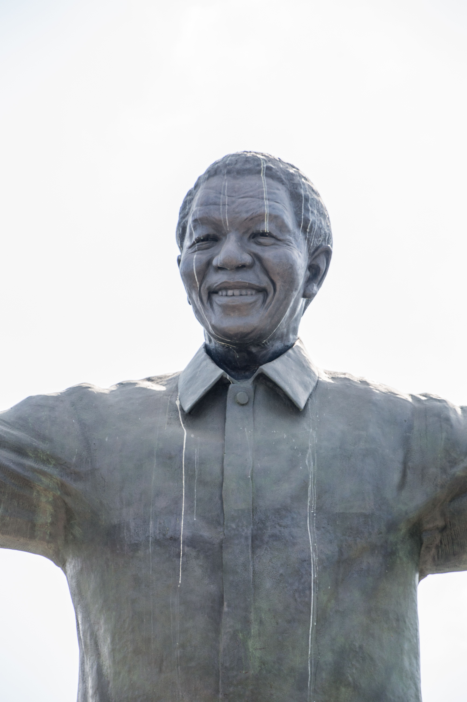

Nelson Mandela: His Life, Struggles, Leadership and the Lessons He Left Behind


Nelson Mandela's life was shaped by a long struggle against racial oppression, years of imprisonment, political change and the difficult work of building a democratic society.
He was not born as a world-famous leader. His journey began in a rural community in South Africa, where he grew up learning about traditional leadership, family responsibility and the history of his people.
His life later took him into law, politics, underground resistance, prison, negotiations and eventually the presidency of South Africa.
The most valuable part of his story is not simply that he became president. It is the collection of choices, sacrifices, mistakes, struggles and responsibilities that came before that achievement.
Who Was Nelson Mandela?
Nelson Rolihlahla Mandela was born on July 18, 1918, in Mvezo in the Transkei region of South Africa.
His birth name was Rolihlahla Mandela. The name Nelson was given to him by a teacher when he began primary school.
His father, Nkosi Mphakanyiswa Gadla Mandela, served as an important advisor to the acting king of the Thembu people. His mother was Nonqaphi Nosekeni.
Mandela therefore grew up close to traditional leadership and learned about community responsibilities from an early age.
His childhood environment was very different from the political world he would later enter. Yet the lessons he encountered while growing up would become part of his understanding of leadership.
Mandela began life in a rural community far from the international stage. His later achievements demonstrate that a person's starting circumstances do not necessarily determine how far their life can develop.
Losing His Father
Mandela's father died when Mandela was still a child.
After his father's death, Mandela was placed under the guardianship of the Thembu regent, Jongintaba Dalindyebo.
He was raised at the Great Place at Mqhekezweni, where he was exposed to discussions about leadership and community affairs.
Mandela later remembered watching traditional leaders discuss community matters. Decisions were not simply announced without discussion. People were given opportunities to speak.
Those experiences helped shape his understanding of consultation and leadership.
Education
Education became an important part of Mandela's development.
He attended several schools and eventually studied at the University College of Fort Hare.
His university experience did not proceed smoothly. He became involved in a student protest and was expelled from Fort Hare.
Instead of abandoning education, Mandela continued his studies through other routes.
He later completed his Bachelor of Arts through the University of South Africa.
He also studied law and became increasingly interested in the political and social conditions surrounding Black South Africans.
Mandela's education was interrupted more than once, but he continued learning. Education is not limited to one institution, one classroom or one certificate.
Moving to Johannesburg
Mandela eventually left the rural environment of his childhood and went to Johannesburg.
The city exposed him to a different side of South African society. There he encountered the realities of racial inequality more directly.
He worked different jobs while continuing his legal and political development.
Johannesburg also introduced him to people who would become important figures in his life, including Walter Sisulu.
Sisulu helped connect Mandela with political networks and legal opportunities.
Becoming a Lawyer
Mandela became increasingly interested in law because he believed legal knowledge could help people who were experiencing discrimination.
In 1952, Mandela and Oliver Tambo established a law practice in Johannesburg.
The office became an important place for Black South Africans seeking legal assistance during a period when discriminatory laws affected their daily lives.
For Mandela, law was not simply an academic subject. It became a tool through which he could understand and challenge the system around him.
Mandela used his legal education in practical situations. Learning a skill can become more meaningful when it is used to solve problems or help other people.
Joining the African National Congress
Mandela joined the African National Congress in 1944 and helped form the ANC Youth League.
The youth movement wanted a stronger mass-based approach to political action.
Mandela became increasingly active in campaigns against discriminatory laws.
His political journey was not a simple straight line. His views and methods changed as South Africa's political situation became more severe.
The Defiance Campaign
In 1952, Mandela became National Volunteer-in-Chief of the Defiance Campaign.
The campaign involved organized civil disobedience against unjust laws.
Mandela and other activists were arrested and prosecuted for their participation.
The campaign demonstrated how organized citizens could challenge unfair policies through collective action.
One person can attract attention, but lasting social change usually requires cooperation, planning and the participation of many people.
The Freedom Charter
Mandela was involved in the political environment surrounding the adoption of the Freedom Charter in 1955.
The charter expressed a vision of a South Africa in which political rights would not be determined by race.
Its ideas became important to the broader anti-apartheid movement.
The struggle was not only about replacing one political leader with another. It was also about what kind of society South Africa should become.
The Treason Trial
In December 1956, Mandela and many other activists were arrested in a large police operation.
They were charged with treason.
The case became a long legal battle that lasted several years.
Eventually, Mandela and the remaining accused were acquitted in 1961.
The trial was another major interruption in Mandela's life, but it also gave him experience with legal processes and political persecution.
Sharpeville and a Changing South Africa
In March 1960, police killed 69 people during a protest at Sharpeville.
The event intensified the political crisis in South Africa.
The government declared a state of emergency and banned the ANC and other organizations.
The political environment became increasingly dangerous.
Mandela eventually went underground and became involved in a different phase of the struggle.
Umkhonto weSizwe
In 1961, Mandela became involved in the formation of Umkhonto weSizwe, often translated as "Spear of the Nation."
The organization became associated with the armed struggle against the apartheid government.
This part of Mandela's history is important because it shows that his political journey included difficult and controversial decisions.
Understanding historical figures requires more than turning them into perfect heroes. Their choices should be studied in the context of the conditions they faced.
Learning from a historical figure does not require pretending that every decision was simple or universally accepted. Understanding the full story helps us make better judgments about leadership and responsibility.
Leaving South Africa Secretly
In January 1962, Mandela secretly left South Africa.
He travelled to other African countries and England to seek support for the struggle and received military training in Morocco and Ethiopia.
He returned to South Africa later that year.
Soon after his return, he was arrested near Howick in KwaZulu-Natal.
Arrest and Imprisonment
Mandela was convicted in 1962 and sentenced to five years in prison for leaving the country without permission and for inciting workers to strike.
He was initially held at Pretoria Local Prison and later transferred to Robben Island.
While he was imprisoned, authorities also pursued other leaders in what became known as the Rivonia Trial.
The Rivonia Trial
The Rivonia Trial became one of the most important legal events in Mandela's life.
Mandela and other defendants faced the possibility of a death sentence.
In 1964, Mandela and several other defendants were sentenced to life imprisonment.
Instead of receiving a short prison sentence, Mandela would spend decades behind bars.
"I have cherished the ideal of a democratic and free society in which all persons live together in harmony and with equal opportunities."
— Nelson Mandela, Speech from the Dock, 1964
Life on Robben Island
Mandela spent eighteen years on Robben Island.
Prison life was harsh. Political prisoners faced restrictions, physical labour and separation from their families.
Mandela's mother died while he was imprisoned, and his eldest son Thembekile later died in a car accident.
He was not allowed to attend their funerals.
These losses were deeply painful, but prison did not completely stop Mandela from learning and developing.
He studied, read extensively and developed relationships with fellow prisoners.
He also learned Afrikaans and studied the history and culture of the people who controlled the government.
Mandela could not control when he would be released from prison, but he could control how he used much of his time. Reading, studying and reflecting helped him continue developing despite his circumstances.
Leadership Behind Prison Walls
Mandela gradually became one of the most influential leaders among political prisoners.
He negotiated with prison authorities and worked with other prisoners to improve conditions.
His leadership was not based only on giving orders.
He learned to listen, negotiate and understand the people around him.
These skills would become particularly important after his release.
Moving to Pollsmoor Prison
In 1982, Mandela was transferred from Robben Island to Pollsmoor Prison in Cape Town.
The transfer changed his circumstances and brought him into a new stage of negotiations.
As the years passed, Mandela increasingly became involved in discussions about a possible political settlement.
Learning to Negotiate
One of the most important developments during Mandela's imprisonment was his willingness to communicate with people who represented the system he opposed.
This did not mean abandoning his political goals.
Instead, it demonstrated that negotiation can sometimes be necessary when a society must move from conflict toward a new political order.
Mandela studied the people he needed to negotiate with and tried to understand their fears, interests and political concerns.
Listening to someone with different views can help you understand a problem more deeply. Communication can create opportunities that confrontation alone may not provide.
Rejecting Conditional Freedom
In 1985, Mandela was offered conditional release if he renounced violence.
He rejected the offer.
His decision demonstrated that he did not want his personal freedom to be separated from the broader political question facing South Africa.
He believed the conditions attached to the offer were unacceptable.
Every important goal has a cost. Understanding which principles are non-negotiable can help a person make difficult decisions.
Illness and the Final Years of Imprisonment
In 1988, Mandela was diagnosed with tuberculosis and spent time in hospital receiving treatment.
He was later moved to Victor Verster Prison, where he spent the final period of his imprisonment.
By this time, the political pressure surrounding apartheid had become enormous.
Negotiations between Mandela and government representatives continued.
Freedom After 27 Years
On February 11, 1990, Nelson Mandela walked out of Victor Verster Prison as a free man.
He had spent more than 27 years in prison.
His release became an international symbol of political change.
However, freedom did not mean that his work was finished.
South Africa still faced serious political violence, mistrust and uncertainty.
Mandela now had to help transform years of conflict into a political system capable of including people who had previously been divided by race.
Mandela's release was a historic victory, but the difficult task of building a peaceful democratic future still remained.
Negotiating a New South Africa
After his release, Mandela became deeply involved in negotiations to end apartheid and create a democratic political system.
The process was difficult.
Political violence continued in parts of the country.
There were disagreements within political organizations and deep mistrust between communities.
Mandela and other leaders had to find ways to move forward without allowing the country to descend into a larger conflict.
The Nobel Peace Prize
In 1993, Nelson Mandela and South African President F. W. de Klerk were jointly awarded the Nobel Peace Prize.
The award recognized their work toward the peaceful transition away from apartheid and toward democratic government.
Their cooperation was significant because it demonstrated that former political opponents could participate in negotiations to create a different future.
The 1994 Election
On April 27, 1994, South Africa held its first democratic election in which people of all races could participate.
Mandela voted for the first time in his life.
The election represented a dramatic change from the political system that had existed during most of his lifetime.
The African National Congress won the election, and Mandela became the country's first democratically elected president.
Becoming President
Mandela was inaugurated as president on May 10, 1994.
His presidency was closely associated with reconciliation and the attempt to build a common national identity.
He faced the enormous challenge of leading a country with deep racial, economic and political divisions.
Rather than presenting the new government simply as a victory for one group over another, Mandela emphasized the idea of a country belonging to all its citizens.
Once a person receives responsibility, the goal should not simply be to reward supporters. Leadership also requires thinking about people who disagree with you and communities that may not have supported you.
Reconciliation
One of the most recognized aspects of Mandela's presidency was his support for reconciliation.
South Africa had experienced decades of racial discrimination, political repression and conflict.
Simply changing the government could not instantly remove the anger and pain created by that history.
The Truth and Reconciliation Commission became an important part of the country's effort to confront abuses committed during the apartheid period.
The broader lesson was that a society cannot build a peaceful future by pretending that painful history never happened.
Mandela and the Rugby World Cup
Sport also became part of Mandela's approach to national unity.
During the 1995 Rugby World Cup hosted in South Africa, Mandela publicly supported the national rugby team, the Springboks.
The team had historically been strongly associated with the white South African community.
Mandela's decision to embrace the team was seen as an attempt to use sport as a bridge between communities.
The Springboks eventually won the tournament.
The moment became an important symbol of reconciliation in post- apartheid South Africa.
People do not always need to agree about everything before they can share something positive. Sport, education, culture and community activities can create opportunities for people to connect.
His Approach to Leadership
Mandela's leadership style was influenced by both traditional experiences and years of political struggle.
He understood the importance of listening.
He also understood that leaders cannot solve every problem personally.
Delegation, negotiation and cooperation were necessary.
His presidency also demonstrated the importance of symbolism.
Sometimes a leader's actions communicate a message more effectively than a long speech.
Stepping Down After One Term
Mandela served as president from 1994 to 1999.
He did not seek to remain president indefinitely.
After one term, he stepped down and allowed South Africa's democratic institutions to continue developing under new leadership.
A responsible leader should understand that institutions must survive beyond one individual. Knowing when to step aside can be a sign of confidence in the system being built.
Life After the Presidency
Mandela did not stop working after leaving office.
He continued supporting humanitarian causes and organizations, including work involving children, education, health and social development.
He also became increasingly involved in campaigns concerning HIV and AIDS, an issue that was particularly important in South Africa.
His post-presidential work demonstrated that public service does not necessarily end when someone leaves political office.
Family and Personal Sacrifice
Mandela's public achievements came with serious personal costs.
His political involvement placed enormous pressure on his family.
His years in prison meant he missed many ordinary moments of family life.
His mother died while he was imprisoned, and he could not attend her funeral. His eldest son also died while Mandela was in prison.
These experiences reveal another side of his story.
Public achievements can sometimes hide private sacrifices.
Before admiring someone's achievements, it is worth remembering that major accomplishments may involve sacrifices that are invisible to the public.
Mandela's Character
Mandela's public image often focuses on forgiveness, courage and reconciliation.
However, his character was not formed overnight.
He experienced anger, disappointment, political disagreement and personal loss.
His development as a leader came partly from learning how to manage those experiences.
This makes his story especially useful for people who are facing difficult circumstances of their own.
What We Can Learn From Nelson Mandela
1. Do Not Give Up Because Progress Is Slow
Mandela's struggle lasted for decades.
Many people would become discouraged if they worked toward a goal for years without seeing immediate results.
His story demonstrates that some goals require patience beyond what one initially expects.
If you are building a business, learning a profession or improving your education, do not judge your entire journey by one difficult month. Measure progress over time.
2. Keep Learning
Mandela continued reading and studying during imprisonment.
He used education as a way to develop himself even when his freedom was restricted.
Use available time to learn something useful. A phone, library, course, book or conversation can become an opportunity for growth.
3. Learn to Listen
Leadership requires more than speaking.
Mandela learned to listen to allies, opponents and other people around him.
Before responding to disagreement, try to understand why the other person thinks differently. Understanding does not require agreement.
4. Do Not Let Anger Control Every Decision
Mandela had experienced injustice and imprisonment.
Yet his later political leadership emphasized reconciliation.
That does not mean that injustice should be ignored. It means that responding to injustice requires thinking about the consequences of each action.
5. Be Prepared for Responsibility
Mandela spent years preparing intellectually and politically before becoming president.
Responsibility often arrives after a long period of preparation.
6. Understand the Other Side
Mandela studied the language, history and culture of the people he opposed politically.
Understanding another side can make negotiation and problem-solving more effective.
7. Do Not Confuse Forgiveness With Forgetting
Reconciliation does not mean pretending that painful events never happened.
A society can remember injustice while still attempting to prevent future conflict.
8. Use Influence to Help Others
Mandela continued humanitarian work after leaving the presidency.
This demonstrates that influence can be used for more than personal wealth or recognition.
9. Know When to Step Aside
Mandela left the presidency after one term.
Strong institutions require leadership transitions.
10. Your Past Does Not Have to Control Your Future
Mandela spent more than 27 years in prison but eventually became president of the country whose government had imprisoned him.
His story demonstrates how dramatically circumstances can change over a lifetime.
Lessons for Young People
Young people can learn several important lessons from Mandela's life.
First, education matters even when circumstances are difficult.
Second, patience is important when pursuing a long-term goal.
Third, leadership is not simply about being the loudest person in a room.
Fourth, disagreements should not automatically become personal enemies.
Finally, young people should understand that their present situation does not necessarily predict their future.
Lessons for Leaders
Mandela's life also provides lessons for leaders.
A leader should understand the people they serve.
A leader should be able to listen.
A leader should understand that compromise is sometimes necessary without abandoning fundamental principles.
A leader should also think about what happens after they leave office.
The strongest legacy is not always the number of years someone remains in power. It can be the strength of the institutions and people left behind.
Lessons for Ordinary Life
Mandela's story is not only useful for politicians.
Someone working a normal job can learn from his patience.
A student can learn from his commitment to education.
A business owner can learn from his persistence.
A parent can reflect on his sacrifices.
A person experiencing conflict can learn about the value of communication.
Someone who has failed can learn that one difficult chapter does not have to become the whole story.
A Simple Way to Apply Mandela's Lessons
Decide what you genuinely want to improve instead of following every trend around you.
Build knowledge and skills that make your goal more realistic.
Treat difficulties as information rather than automatic proof that you should stop.
Learn from people who agree with you and from people who challenge your ideas.
Do not sacrifice a meaningful future simply for a temporary advantage.
Use whatever skills, knowledge or influence you gain to create value for other people.
Why Nelson Mandela Remains Important
Nelson Mandela remains important because his story represents one of the most dramatic political transformations of the twentieth century.
He went from a young man studying law to an activist, prisoner, negotiator and eventually president.
His life also demonstrates the complexity of leadership.
He made controversial decisions, experienced personal failures and suffered enormous losses.
Studying those complexities makes his story more valuable than simply turning him into a perfect symbol.
Remembering His Legacy
Mandela died on December 5, 2013, at his home in Johannesburg.
He was 95 years old.
By the time of his death, he had become an internationally recognized symbol of resistance to apartheid, democracy and reconciliation.
His legacy continues through organizations, educational programs, books, archives and humanitarian initiatives.
But perhaps the most useful way to remember him is not simply by memorizing dates.
It is by asking what his experiences can teach us about our own lives.
Mandela's life was not defined by one speech, one election or one moment outside a prison gate. It was shaped by decades of choices, relationships, education, sacrifice, mistakes, resilience and responsibility.
Final Reflection
Nelson Mandela's story begins in a rural part of South Africa and eventually reaches the highest political office in the country.
Between those two points were years of education, political activism, legal work, conflict, imprisonment, loss, negotiation and personal growth.
His life reminds us that meaningful change rarely happens instantly.
It often requires people to continue working when success is still far away.
It also reminds us that leadership is not only about winning.
After winning political power, Mandela faced the much harder question of what to do with it.
His response emphasized reconciliation, institution-building and service.
For ordinary people, the lesson is simple: build your skills, remain patient, learn from setbacks, listen to others, stand for principles that matter and use your abilities responsibly.
A person's circumstances can change dramatically over a lifetime.
The important question is what that person chooses to do with each stage of the journey.
Learn continuously. Be patient with meaningful goals. Stand against injustice. Listen before judging. Adapt when circumstances change. Use influence responsibly. And remember that a person's legacy is created not only by what they achieve, but also by how they treat other people.
Sources and Further Reading
This article is written in original language for educational and storytelling purposes. Historical details were checked against reliable historical resources.